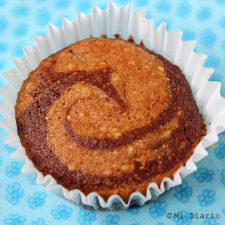

muffins de banana mármol
Ingredientes
- 1 banana madura
- 3/4 taza de azúcar (puede usar menos)
- 2 cucharadas de aceite
- 1/3 de taza de leche vegetal o de vaca
- 1 cucharadita de esencia de vainilla
- 1 1/2 taza de harina para todo uso (sin polvos de hornear)
- Una pizca de bicarbonato de sodio
- Una pizca de sal
- 3 cucharadas de cacao en polvo (sin azúcar)
- 6 cucharadas de agua
Preparacion
- Precalentar el horno a 350°F (180°C)
- Preparar los moldes de papel o los que use.
- Moler la banana, mezclarla con el azúcar y luego añadir el aceite.
- En un bol aparte mezclar todos los ingredientes secos, menos el cacao en polvo.
- Agregar los ingredientes secos a la mezcla de banana. También la vainilla y la leche.
- Dividir la mezcla en dos, en la vainilla colocar dos cucharadas de agua y en la otra agregar el cacao en polvo y 4 cucharadas de agua.
- Ir colocando las mezclas por cucharadas en los moldes, primero la de chocolate, luego la vainilla y así sucesivamente.
- Hornear por 15 minutos.